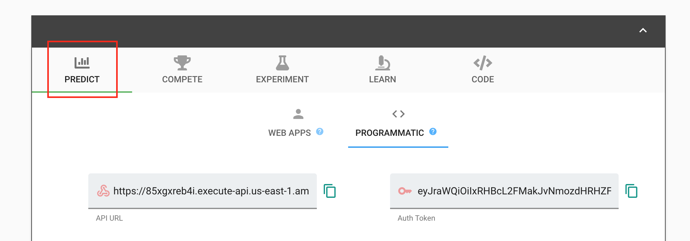

Advanced Features¶
The AI Model Share library can help deploy interactive web dashboards for making predictions with your models in minutes.
However, sometimes there is a need for higher levels of customization than the base features include.
This page describes additional pathways to allow for the greatest programming flexibility, while also leveraging the power of the AI Model Share library.
Custom Deployments¶
The base ModelPlayground.deploy method deploys a pre-written lambda handler optimized for efficiency with specific types of prediction domains.
For projects requiring more flexibility in the lambda handler, the AI ModelShare library allows for “Custom Deployments”. Custom Deployments allow users to leverage the AI ModelShare infrastructure through AWS, while also creating opportunities for additional customization.
Tutorial
Using PySpark¶
AI Model Share supports PySpark. Note that the current prediction API runtime can only accept Pandas Dataframes, which may require additional steps for PySpark preprocessors.
Tutorial
Connecting Custom Web Apps¶
AI Model Share allows users to leverage the AI Model Share deployment infrastructure to power their own custom web apps. Web apps can be displayed through the AI Model Share website and be highlighted as part of a developer’s portfolio.
Users can connect their web apps in 3 easy steps:
Deploy a Model Playground (See tutorials HERE).
In the code for your web app, set the path for your Model Playground’s prediction API (built for you by AI Model Share in the “deploy” step) as the endpoint for the API request.
Note
Owners can find their Model Playground’s API URL on the “Predict” tab of their Model Playground.
AI Model Share API URLs follow this format: “https://example.execute-api.us-east-1.amazonaws.com/prod/m”
Authorization tokens are generated for users when they log in to the AI Model Share website. Unpack the token parameter within your Streamlit code, then format the headers in your API call to expect a token as a query parameter.
auth_token = st.experimental_get_query_params()['token'][0] headers = { "Content-Type": "application/json", "authorizationToken": auth_token, }
Done! Design your web-app to customize the AI Model Share infrastructure to your own needs. See examples below:
Examples
Model Reproducibility¶
AI Model Share encourages users to share, replicate, and build on each other’s work by offering full model reproducibility functionality. Users can leverage Competitions & Experiments as a way to exchange trained & untrained models.
To share a reproducible model, take the following steps:
Export the model’s reproducibility environment into a json file with the
export_reproducibility_envfunction. This function captures all of the necessary information to exactly reproduce a machine learning model.Example:
from aimodelshare import export_reproducibility_env mode = "gpu" # or "cpu", depending on model type seed = 2021 export_reproducibility_env( seed=seed, directory="", #use "" for current directory mode=mode, )
Note
The captured reproducibility environment only applies for one training iteration (data prep, preprocessing, fit model, submit model), so it is recommended to only train one model per training iteration.
Build your model with your preferred ML library.
Submit model with the
reproducibility_env_filepathargument set.Example:
#Submit Reproducible Model: reproducibility_env_filepath="reproducibility.json" # generate predicted y values (for keras models) y_pred = model.predict(X_test).argmax(axis=1) prediction_labels = [y_test.columns[i] for i in y_pred] # Submit Model to Competition Leaderboard mycompetition.submit_model(model_filepath = "model.onnx", preprocessor_filepath="preprocessor.zip", prediction_submission=prediction_labels, reproducibility_env_filepath=reproducibility_env_filepath)
To instantiate a previously submitted reproducible model, use the Competition.instantiate_model method.
Example:
reproducible_model = mycompetition.instantiate_model(version=1, reproduce=True)